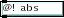
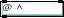
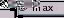

GridFlow 0.7.0 - reference index
Numbers
Grid Literals
Grid Protocol
Picture Protocol
One-Input Operators
Two-Input Operators
Bridges
Numbers
High-performance computation requires precise and quite peculiar definitions of numbers and their representation.
Inside most programs, numbers are written down as strings of bits. A bit is either zero or one. Just like the decimal system uses units, tens, hundreds, the binary system uses units, twos, fours, eights, sixteens, and so on.
One notation called integer allows for only integer values to be written (no fractions). when it is unsigned, no negative values may be written. when it is signed, one bit indicates whether the number is positive or negative.
In GridFlow, there are two kinds of numbers:
int32, signed 32-bit integer. values from -2147483648 to 2147483647 (which is from -231 to 231-1). this is used for most computations.
uint8, unsigned 8-bit integer. values from 0 to 255 (which is from 0 to 255). this is the usual size of numbers taken from files and cameras, and written to files and to windows.
Grid Literals
In every grid-accepting inlet, a list may be sent instead; if it consists only of integers, it will be converted to a one-dimensional grid. Else it may contain a single "#" sign and integers on both sides of it, where the ones to the left of it are fed as arguments to an imaginary [@redim] object and the one to the right of it are fed through that [@redim].
In every grid-accepting inlet, an integer or float may also be sent; it will be converted to a zero-dimensional grid (a scalar).
Grid Protocol
each element of a grid is an int32.
a single-dimensional grid of 3 elements (a triplet) is called dim(3). a three-dimensional grid of 240 rows of 320 columns of triplets is called dim(240,320,3).
There is a sequence in which elements of a Grid are stored and transmitted. Dimension 0 is called "first" and dimension N-1 is called "last". They are called so because if you select a position in the first dimension of a grid, the selected part is of the same shape minus the first dimension; so in dim(240,320,3) if you select row 51 (or whichever valid row number), you get a dim(320,3). if you select a subpart two more times you get to a single number.
At each such level, elements are sent/stored in their numeric order, and are numbered using natural numbers starting at 0. This ordering usually does not matter, but sometimes it does. Most notably, @import, @export and @redim care about it.
On the other hand, order of dimensions usually does matter; this is what distinguishes rows from columns and channels, for example. Most objects care about the distinction.
A grid with only 1 element in a given dimension is different from one lacking that dimension; it won't have the same meaning. You can use this property to your advantage sometimes.
Zero-dimensional grids exist. They are called dim(). They can only contain a single number.
Picture Protocol
This section is useful if you want to know what a picture is in terms of a grid.
A picture is a three-dimensional Grid:
- 0 : rows
- 1 : columns
- 2 : channels
Channels for the RGB color model are:
- 0 : red
- 1 : green
- 2 : blue
Because Grids are made of 32-bit integers, a three-channel picture uses 96 bpp (bits per pixel), and have to be downscaled to 24 bpp (or 16 bpp) for display. That huge amount of slack is there because when you create your own effects you often have intermediate results that need to be of higher precision than a normal picture. Especially, results of multiplications are big and should not overflow before you divide them back to normal; and similarly, you can have negative values all over, as long as you take care of them before they get to the display.
In the final conversion, high bits are just ignored. This means: black is 0, maximum is 255, and values wrap like with % 256. If you want to clip them, you may use "@ max 0" and "@ min 255" objects.
One-Input Operators
| internal name | usual name | description |
| abs |  | absolute value of A |
| rand | randomly produces a non-negative number below A | |
| sqrt |  | square root of A, rounded downwards |
| sq |  | A times A |
Two-Input Operators
In the following table, A is the value entered to the left, and B is the value entered to the right.
Angles are in hundredths of degrees. This means a full circle (two pi radians) is 36000. You convert from degrees to our angles by multiplying by 100. You convert from radians to our angles by multiplying by 18000/pi.
Hyperbolic functions (tanh) work with our angles too, so the same conversions apply.
| internal name | usual name | description |
| ignore |  | A |
| put |  | B |
| add |  | A + B |
| sub |  | A - B |
| bus | B - A | |
| mul |  | A * B |
| div |  | A / B, rounded towards zero |
| div2 |  | A / B, rounded downwards |
| vid | B / A, rounded towards zero | |
| vid2 |  | B / A, rounded downwards |
| mod |  | A % B, modulo (goes with div) |
| dom |  | B % A, modulo (goes with div) |
| rem |  | A % B, remainder (goes with /) |
| mer |  | B % A, remainder (goes with /) |
| or | A or B, bitwise | |
| xor |  | A xor B, bitwise |
| and |  | A and B, bitwise |
| shl |  | A * (2**(B % 32)), which is left-shifting |
| shr |  | A / (2**(B % 32)), which is right-shifting |
| sc_or |  | if A is zero then B else A |
| sc_and |  | if A is zero then zero else B |
| min |  | the lowest value in A,B |
| max |  | the highest value in A,B |
| cmp |  | -1 when A |
| eq |  | is A equal to B ? 1=true, 0=false |
| ne |  | is A not equal to B ? |
| gt |  | is A greater than B ? |
| le |  | is A not greater than B ? |
| lt |  | is A less than B ? |
| ge |  | is A not less than B ? |
| sin |  | B * sin(A) |
| cos |  | B * cos(A) |
| atan |  | arctan(A/B) |
| tanh* |  | B * tanh(A) |
| log* |  | B * log(A) (in base e) |
| gamma |  | floor(pow(a/256.0,256.0/b)*256.0) |
| pow |  | A**B, that is, A raised to power B |
Bridges
Starting with version 0.6, GridFlow is Ruby-centric instead of jMax-centric. jMax support has been added back as a Bridge.
Bridges, for the most part, plug into the FObject class, which is the common root of most of GridFlow's classes. Under the current design, the bridge is compiled separately, and is directly loaded by the host software; then the bridge starts Ruby and makes it load the main GridFlow; then the bridge hooks with the main part.
GridFlow 0.7.0 Documentation
by Mathieu Bouchard matju@sympatico.ca
and
Alexandre Castonguay acastonguay@artengine.ca